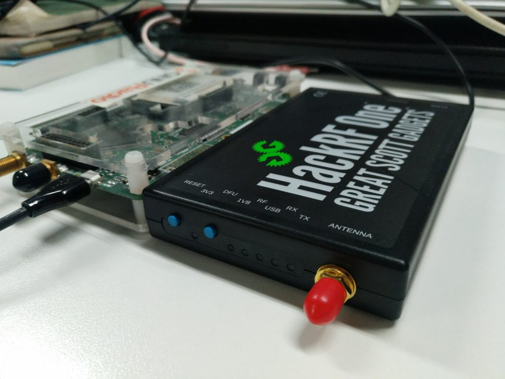
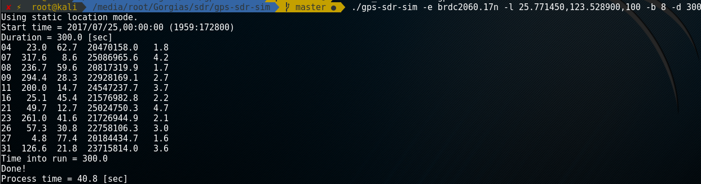
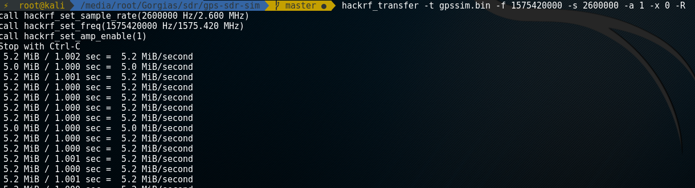
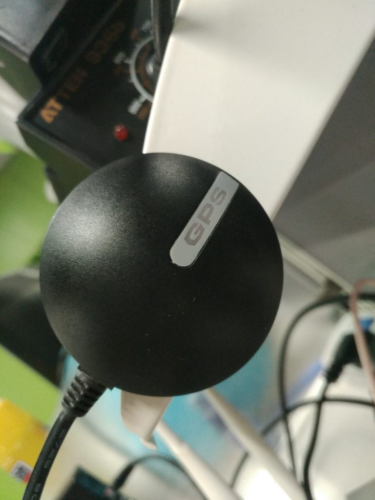
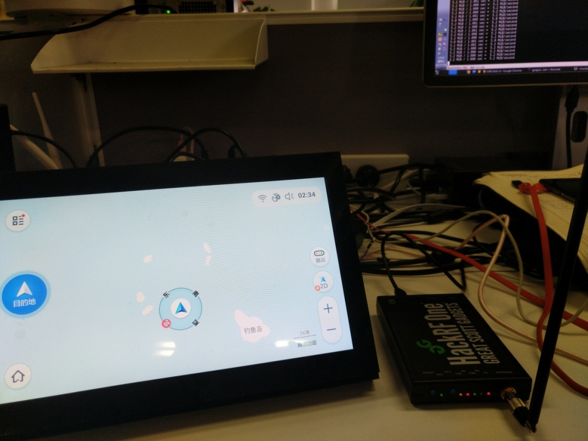
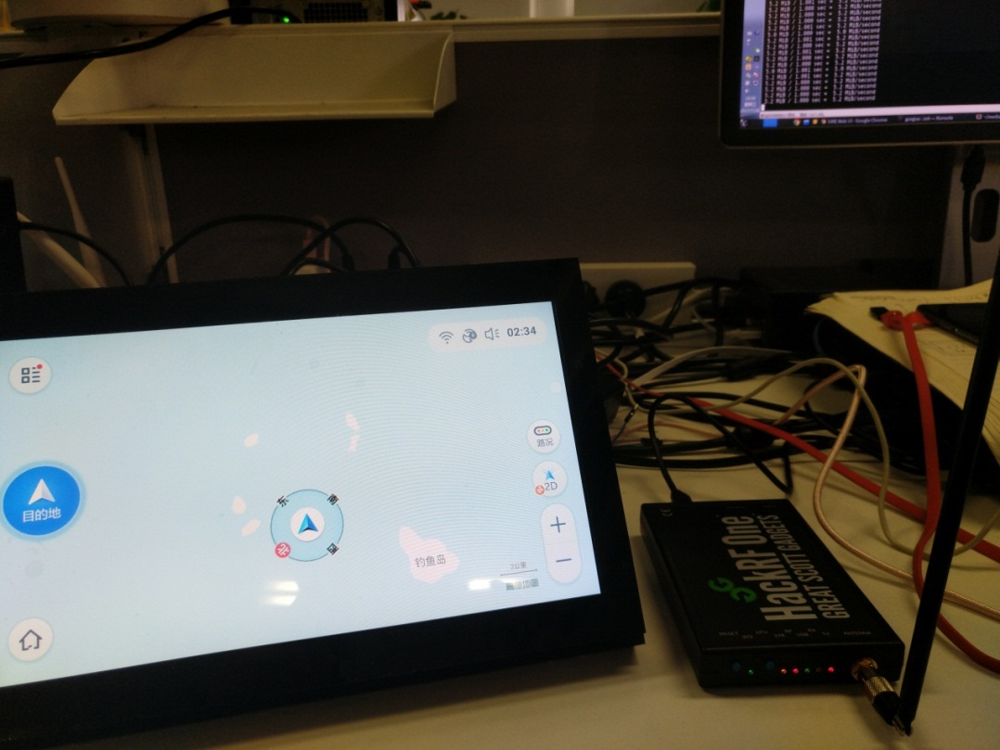
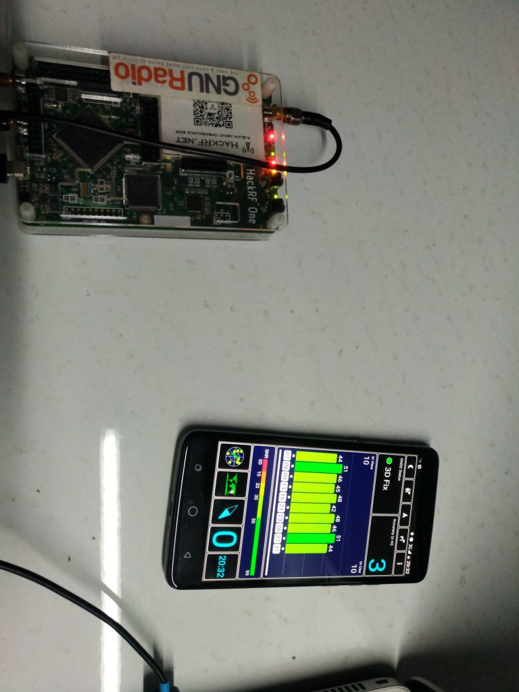

前言
Leader把他的两个HackRF One借给我玩，我打算用它来做GPS欺骗实验。 第一次接触软件无线电，开始感兴趣了，也打算把它学好。

测试环境
HackRF One 市面上有两个版本，一个是美国原版，一个是星天无限版。 作者Mike Ossmann在第一版HackRF Jawbreaker时通过Kickstart融资成功，之后Mike Ossmann开始进行了第二版HackRF One的开发，刚开始开源项目的代码和文档都在github上，2014年3月13日一个名叫星天无限的中国厂商"提前"发布了HackRF One。 经过实际测试，同样固件版本的情况下，星天版因为有功放，信号强度比美版要强并且稳定很多。 天线使用的是带吸盘的加感鞭状天线。
- Computer: HP 840 G3
- System: Kali 2016.2
- SDR: HackRF One 星天版/美版
环境准备
HackRF
玩SDR可以下载 GNU Radio Live 镜像。 也可以使用其他Linux发行版，Arch Linux官方源自带SDR相关的工具，Kali 自带HackRF的驱动和工具，所以接上电脑直接在terminal输入hackrf_info能看到信息。
hackrf_info version: 2017.02.1
libhackrf version: 2017.02.1 (0.5)
Found HackRF
Index: 0
Serial number: 0000000000000000583064c028624e4b
Board ID Number: 2 (HackRF One)
Firmware Version: 2017.02.1 (API:1.02)
Part ID Number: 0xa000cb3c 0x005d4f47
在此之前我升级了hackrf的固件，所以这边看到的信息是新版。 附带一下升级的过程，先刷入SPI固件
git clone https://github.com/mossmann/hackrf
cd ./firmware-bin/
hackrf_spiflash -Rw hackrf_one_usb.bin
按一下Reset按钮，再更新CPLD
hackrf_cpldjtag -x hackrf_cpld_default.xsvf
GPS-SDR-SIM
GPS-SDR-SIM用于生成GPS基带数据流，可用于bladeRF, HackRF, and USRP等SDR平台。 下载并编译GPS-SDR-SIM
git clone https://github.com/osqzss/gps-sdr-sim
cd gps-sdr-sim
gcc gpssim.c -lm -O3 -o gps-sdr-sim
Usage: gps-sdr-sim [options]
Options:
-e <gps_nav> RINEX navigation file for GPS ephemerides (required)
-u <user_motion> User motion file (dynamic mode)
-g <nmea_gga> NMEA GGA stream (dynamic mode)
-l <location> Lat,Lon,Hgt (static mode) e.g. 35.681298,139.766247,10.0
-t <date,time> Scenario start time YYYY/MM/DD,hh:mm:ss
-T <date,time> Overwrite TOC and TOE to scenario start time
-d <duration> Duration [sec] (dynamic mode max: 300, static mode max: 86400)
-o <output> I/Q sampling data file (default: gpssim.bin)
-s <frequency> Sampling frequency [Hz] (default: 2600000)
-b <iq_bits> I/Q data format [1/8/16] (default: 16)
-i Disable ionospheric delay for spacecraft scenario
-v Show details about simulated channels
GPS
GPS(Global Positioning System)全称是全球定位系统，GPS接收机至少要收到4颗卫星的信号才能精确定位，三颗测量用WGS-84作为标准的坐标，还有一颗用于提供时间数据，用于减少电磁波传播时间导致的误差。收到的星数越多，定位越精确。关于GPS更多的知识可以参考Wiki Global Positioning System 从NASA的CDDIS数据中心服务器，下载GPS导航的广播星历数据，然后解压，结尾是n的。
ftp://cddis.gsfc.nasa.gov/pub/gps/data/daily/2017/brdc/brdc2060.17n.Z
国内网络环境几乎下载不了，建议走代理下载
proxychains4 -q wget ftp://cddis.gsfc.nasa.gov/pub/gps/data/daily/2017/brdc/brdc2060.17n.Z
7z e brdc2060.17n.Z
文件每天都在更新，其实哪一天都无所谓。 这是星历文件名的格式
YYYY/brdc/brdcDDD0.YYn.Z
关于格式命名规则可以参考Broadcast ephemeris data
解压之后可以看到星历数据是RINEX(Receiver Independent Exchange Format)的2.0格式。 GPS-SDR-SIM通过星历数据生成采样数据。-T选项可以指定时间。 选择高德地图上钓鱼岛的坐标，四舍五入到小数点后6位，随便加上一个海拔，放在location参数名后面。
./gps-sdr-sim -e brdc2060.17n -l 25.771450,123.528900,100 -b 8 -d 200
 持续时间和文件大小有关，默认300秒，把它改成200秒，占1GB空间。HackRF的数据位宽是8位，所以iq_bits设成8。 下面是hackrf_transfer的详细说明
specify one of: -t, -c, -r, -w
Usage:
-h # this help
[-d serial_number] # Serial number of desired HackRF.
-r <filename> # Receive data into file (use '-' for stdout).
-t <filename> # Transmit data from file (use '-' for stdin).
-w # Receive data into file with WAV header and automatic name.
# This is for SDR# compatibility and may not work with other software.
[-f freq_hz] # Frequency in Hz [0MHz to 7250MHz].
[-i if_freq_hz] # Intermediate Frequency (IF) in Hz [2150MHz to 2750MHz].
[-o lo_freq_hz] # Front-end Local Oscillator (LO) frequency in Hz [84MHz to 5400MHz].
[-m image_reject] # Image rejection filter selection, 0=bypass, 1=low pass, 2=high pass.
[-a amp_enable] # RX/TX RF amplifier 1=Enable, 0=Disable.
[-p antenna_enable] # Antenna port power, 1=Enable, 0=Disable.
[-l gain_db] # RX LNA (IF) gain, 0-40dB, 8dB steps
[-g gain_db] # RX VGA (baseband) gain, 0-62dB, 2dB steps
[-x gain_db] # TX VGA (IF) gain, 0-47dB, 1dB steps
[-s sample_rate_hz] # Sample rate in Hz (4/8/10/12.5/16/20MHz, default 10MHz).
[-n num_samples] # Number of samples to transfer (default is unlimited).
[-S buf_size] # Enable receive streaming with buffer size buf_size.
[-c amplitude] # CW signal source mode, amplitude 0-127 (DC value to DAC).
[-R] # Repeat TX mode (default is off)
[-b baseband_filter_bw_hz] # Set baseband filter bandwidth in Hz.
Possible values: 1.75/2.5/3.5/5/5.5/6/7/8/9/10/12/14/15/20/24/28MHz, default <= 0.75 * sample_rate_hz.
[-C ppm] # Set Internal crystal clock error in ppm.
[-H hw_sync_enable] # Synchronise USB transfer using GPIO pins.
生成的gpssim.bin的采样频率为2.6MHz，使用hackrf_transfer设定的采样频率也要与之对应。-x代表TX VGA增益，先设为0db，如果搜不到再加，最大47db。下面是民用的频段，这里我们使用L1的频段。
- L1 1575.42MHz
- L2 1227.60MHz
- L3 1381.05MHz
- L4 1841.40MHz
- L5 1176.45MHz
使用hackrf_transfer发射无线电信号，开启增益并设成最大，循环发射。
hackrf_transfer -t gpssim.bin -f 1575420000 -s 2600000 -a 1 -x 47 -R
 使用USB的GPS接收器也能收到伪造符合NMEA(National Marine Electronics Association)规范的数据。 关于数据格式可以参考NMEA data 
sudo microcom -s 4800 -p /dev/ttyUSB0
 这里使用美版HackRF，不到一分钟目标设备的坐标定位就被欺骗到了海岛

这里使用美版HackRF，不到一分钟目标设备的坐标定位就被欺骗到了海岛

这是使用星天版欺骗成功的结果 